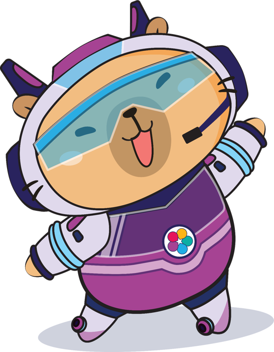

Capi Infographics
Infographic tương tác về Robotics – AYOR 2026 · STEAM for Vietnam
 Robot được cấu tạo như thế nào?Cảm biến, bộ điều khiển, cơ cấu chấp hành – có mô phỏng robot tránh vật cản
Robot được cấu tạo như thế nào?Cảm biến, bộ điều khiển, cơ cấu chấp hành – có mô phỏng robot tránh vật cản

Học gì để làm robot?Hướng nghiệp Robotics: 6 vị trí kỹ thuật, lộ trình học tập và trắc nghiệm tìm nghề hợp với em